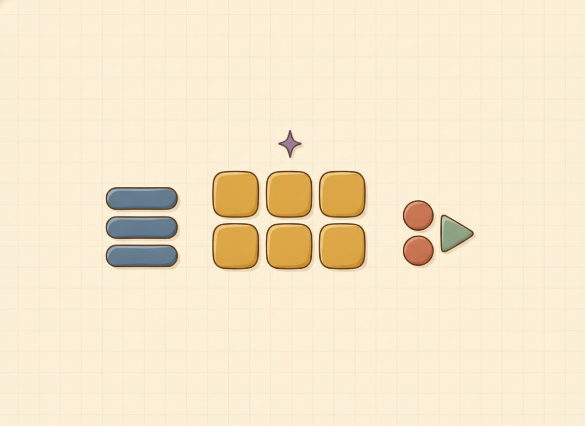

Polynomials — terms, degree, standard form; add & subtract
A polynomial is just a sum of terms like 3x² + 2x − 1: number-times-a-power pieces, added up. It's the noun the next three units are about, so this lesson gives the parts their names and then does the two easiest things you can do with them: add and subtract.
The adding is nothing new; it's Unit 2's "combine like terms" with fresh vocabulary. The subtracting hides one genuine trap, and most of the lesson's care goes there.
First, the vocabulary, all on one example. Take 5x² − 3x + 2. It has three pieces, so it's a trinomial. Its highest power is 2, so its degree is 2. The number riding the highest-power term is its leading coefficient, here 5. And it's already in standard form, meaning its terms run from highest power down to lowest. A useful way to see why the plain number sits last: think of 2 as 2x⁰, since x⁰ = 1. That makes it the lowest-degree term, so it naturally ends the line.
Now adding. Like terms have to match the variable and its power: 3x² and x² are both "x²-pieces," so they combine, while 3x² and 3x are different kinds and don't. Picture the x²-pieces and the x-pieces as two different kinds of box: you can only stack a box with its own kind. Add the coefficients within each kind and keep them sorted by degree: $$(3x^2+2x-1)+(x^2-5x+4) = (3+1)x^2+(2-5)x+(-1+4) = 4x^2-3x+3$$ Nothing fancy: x²-pieces with x²-pieces, x-pieces with x-pieces, plain numbers with plain numbers.

Subtraction is the same idea with one step that's easy to fumble, so go slow here. Subtracting a whole polynomial means a −1 shakes hands with every term inside the second parentheses: every sign flips, not just the first. This is the exact "hand the minus to everyone" move from Unit 2, wearing new clothes: $$(2x^2+3x)-(x^2-x+2) = 2x^2+3x \;\underbrace{-x^2+x-2}_{\text{every sign flipped}} = x^2+4x-2$$ Watch the two that bite: the −x inside became +x, and the +2 became −2. The first term flipping is obvious; it's these later ones that get left alone by accident.
Here's the move that catches it for you: put a simple number in for x and check both sides. At x = 1, the original is (2 + 3) − (1 − 1 + 2) = 5 − 2 = 3, and the result is 1 + 4 − 2 = 3. They match, so the signs are right.
If they hadn't matched, that wouldn't be a failure. Your check would have just caught a slipped sign before it cost you anything. The next move would be to go back and re-run the flips one term at a time, because a mismatch here is almost always one sign left unflipped, not a broken method.
New words
- 10.3.d1 Polynomial: a sum of terms, each a real number (the coefficient) times a whole-number power of a variable (e.g. 3x²+2x-1). The "whole-number power" part is what matters most: it rules out negative and fractional exponents, which is exactly what separates a polynomial from the rational/radical expressions seen in 10.1.
- 10.3.d2 Term / coefficient: a single piece separated by + or -; the coefficient is its number part (in 3x², the coefficient is 3).
- 10.3.d3 Monomial / binomial / trinomial: a polynomial with 1 / 2 / 3 terms.
- 10.3.d4 Degree: the highest exponent in the polynomial (3x²+2x-1 has degree 2). The degree of a single term is its exponent; a nonzero constant has degree 0 (read it as cx⁰, since x⁰=1, so the 2 in 3x²+2x-1 is a degree-0 term, and a lone "7" has degree 0). This is why the constant sits last in standard form: it's the lowest-degree (x⁰) term.
- 10.3.d5 Standard form: terms written in descending order of degree (highest power first).
- 10.3.d6 Leading coefficient: the coefficient of the highest-degree term (once in standard form).
Worked example
10.3.w1 Naming (no arithmetic): 3x²-7 → binomial, degree 2, leading coefficient 3.
Standard form: 10.3.w2 $$2+5x^2-3x \;\Rightarrow\; 5x^2-3x+2$$
Add: 10.3.w3 $$(3x^2+2x-1)+(x^2-5x+4) = 4x^2-3x+3$$
Add (a term cancels to zero): 10.3.w4 $$(x^2+6x+2)+(3x^2-6x-7) = 4x^2+0x-5 = 4x^2-5$$
Subtract, distribute the negative (the #1 trap here): 10.3.w5 $$(2x^2+3x)-(x^2-x+2) = x^2+4x-2 \qquad\text{Check at }x=1:\; 5-2=3 \;\text{ and }\; 1+4-2=3$$
Subtract, three terms each: 10.3.w6 $$(5x^2-2x+1)-(2x^2+3x-4) = 3x^2-5x+5$$
In that fourth example, notice the 6x and the −6x added to nothing and the term simply dropped out: 4x² + 0x − 5 is just 4x² − 5. A term going to zero isn't something missing; it's a real result, and you write what's left.
The slip to keep an eye on is the one the subtraction examples are built around: flipping only the first sign after a minus. It's easy to write (2x² + 3x) − (x² − x + 2) as x² + 2x + 2, leaving the −x and the +2 alone. The cause is natural: the parentheses make it feel like the minus belongs to the whole group rather than to each piece. The cure is the substitution check you just saw, where a mismatch at x = 1 points straight at a sign you didn't flip.
The other thing people do is fuse unlike terms, writing 3x² + 2x as 5x² or 5x³. Those are different kinds of box; an x²-piece and an x-piece can't be stacked, so 3x² + 2x just stays as it is.
Read one straightforward case off the page before the set starts mixing. Name the type, degree, and leading coefficient of 7x⁵. One term, so it's a monomial; its highest (and only) power is 5, so degree 5; and the number on that term is 7, the leading coefficient. You're just reading the parts off the page.
Check yourself
- 10.3.c1 Name the type, degree, and leading coefficient of 4x³ − x + 9, then put 7 − 2x² in standard form. (Trinomial, degree 3, leading coefficient 4; and 7 − 2x² becomes −2x² + 7.)
- 10.3.c2 Subtract (x² − 4x + 5) − (2x² − 4x − 1), then prove the signs are right by testing x = 1. (Flip every sign in the second group: x² − 4x + 5 − 2x² + 4x + 1 = −x² + 6. Check at x = 1: original (1 − 4 + 5) − (2 − 4 − 1) = 2 − (−3) = 5, and −1 + 6 = 5.)
- 10.3.c3 Why can't 3x² and 3x be combined, even though both have a 3 and an x? (They're different kinds of term, one an x²-piece and the other an x-piece, and only terms with the same variable and the same power combine.)
You can now name a polynomial's parts, write it in standard form, add by combining like terms, and subtract with every sign flipped. Then check that subtraction with a quick substitution, so a missed sign never slips past you.
The problems below shuffle naming, adding, and subtracting together, and that mix is harder on purpose: choosing the right first move each time is what makes the skill last. You'll find every answer at the end of the lesson, with a worked example above for each problem, so lean on those if one stops you. The subtraction problems are where the sign trap lives, so run a substitution check on each one. That habit is the main thing this lesson is teaching.
Practice
Name the type, degree, and leading coefficient:
- 10.3.1 3x-7 2. x²-4x+1 3. 7x⁵
Write in standard form:
- 10.3.2 2+5x²-3x 5. 4x-1+x³
Add:
- 10.3.3 (3x²+2x-1)+(x²-5x+4) 7. (2x²+3x)+(4x²-x+5) 8. (x²+6x+2)+(3x²-6x-7)
Subtract (distribute the negative to every term):
- 10.3.4 (2x²+3x)-(x²-x+2) 10. (5x²-2x+1)-(2x²+3x-4) 11. (4x²+x)-(x²+x-6) 12. (x³+2x-3)-(x³-x+5)
AnswersTry each one yourself first, then open to check.
1) binomial, degree 1, leading coefficient 3. 2) trinomial, degree 2, leading coefficient 1. 3) monomial, degree 5, leading coefficient 7. 4) 5x²-3x+2 5) x³+4x-1 6) 4x²-3x+3 7) 6x²+2x+5 8) 4x²-5 9) x²+4x-2 10) 3x²-5x+5 11) 3x²+6 12) 3x-8
Substitution spot-checks: #9 at x=1: 5-2=3, 1+4-2=3. #12 at x=1: (1+2-3)-(1-1+5)=0-5=-5, and 3(1)-8=-5 (the x³'s subtract to zero).